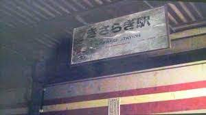

如月車站

起源
如月車站此一都市傳說最初源自文字討論板2channel的神秘學與超常現象板。2004年1月8日，一名網友以葉純（はすみ）的名義進行文字直播，兼尋求協助。她在串內開始留言時表示：
98：這也許是我的錯覺，不過各位不介意的話我能否分享一下？（2004/01/08 23:14:00）
101：我剛剛上了一輛私有鐵路的火車，但有點不對勁。（2004/01/08 23:18:00）
她之後寫道，自己在新濱松站登上西鹿島線後，列車駛了一段長時間都沒有到站，之後列車終在無人的「如月車站」停下。她跟其他網友在第二天凌晨不斷為此進行實時交流。
貼主後來寫道，她在如月車站下車後，發現自己來到一個附近完全是荒山野嶺的地方。她繼表示車站附近發生了一些不可思議的事件，以電話向警方求救也無法得到協助。她在後文表示，自己在穿過一條隧道後，發現有車主願意送自己到附近的車站。此後她停止發文，音訊全無。